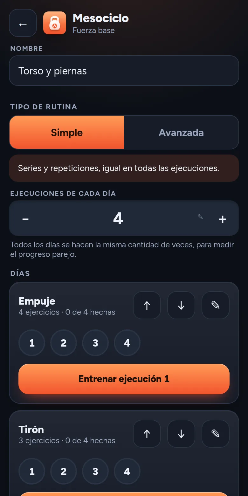

Un plan en cuatro niveles
Un macrociclo agrupa mesociclos, cada mesociclo es una rutina con sus días y cada día se hace varias veces, que son las ejecuciones. Así podés medir tu progreso comparando la misma sesión a lo largo del tiempo.
- Macrociclo
- Mesociclo
- Día
- Ejecución
Una rutina avanzada suma JumpSet, rest pause y escalonado, y deja que cada ejecución sea distinta.
